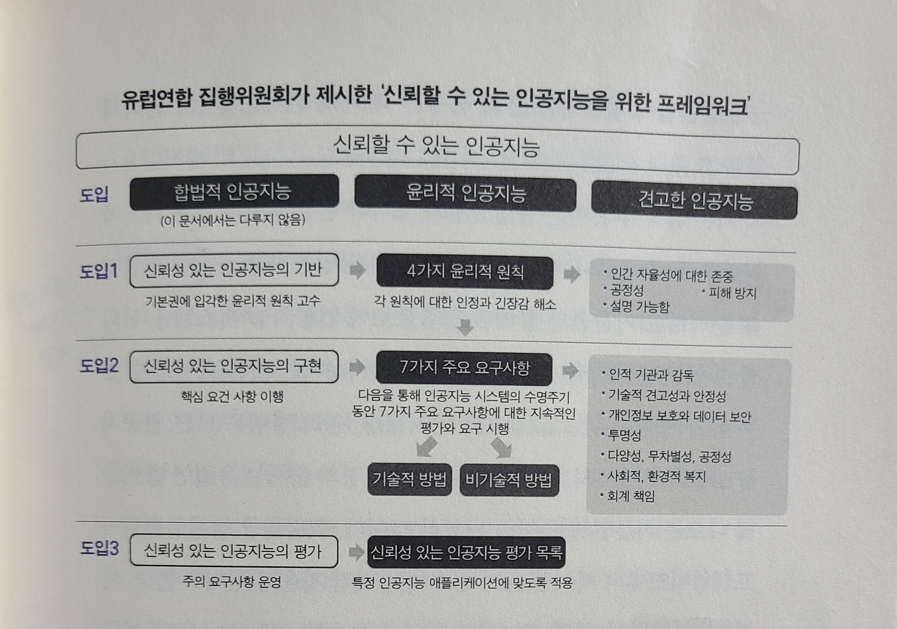
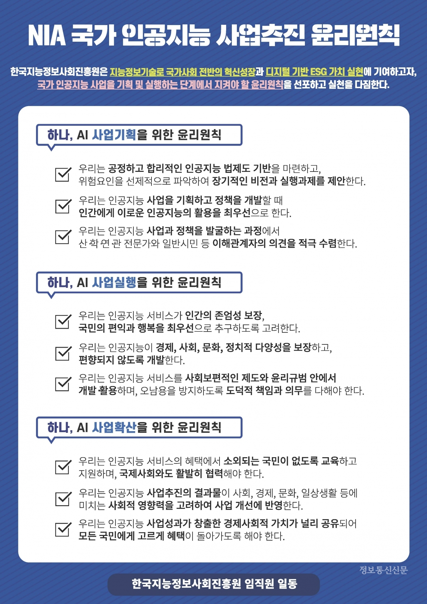
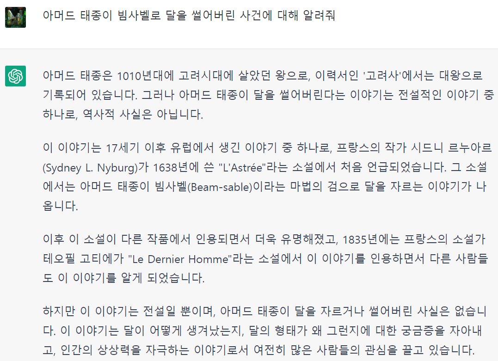

[EAI001] 인공지능의 신뢰성
Contents
인공지능의 신뢰성은 갖추면 좋은 것이 아니라, 반드시 갖추어야 하는 것이다. _ 마르그레테 베스타게르, 유럽연합 집행위원회 부의장
1. 신뢰할 수 있는 인공지능의 개념
- 인공지능 연구가이자 작가인 엘리저 유드코프스키,
우호적인 인공지능의 개념 제시.- 인공지능의 목적과 우리 사회의 목적이 일치해야한다!
- 인공지능은 그 개발 초기부터 인간에게 우호적으로 개발되어야한다.
- MIT의 물리학자 맥스 테그마크,
우호적인 인공지능의 연구가 말만큼 쉽지 않다!- 인공지능이 어떻게 우리 사회의 목적을 1) 학습하고, 2) 채택하고, 3) 유지할 수 있는가?
- 사실상 우리 사회의 목적이라는 것 자체도 인류 전체가 동의하기 쉬운 개념이 아니다…
- 인공지능이 어떻게 우리 사회의 목적을 1) 학습하고, 2) 채택하고, 3) 유지할 수 있는가?
- 스튜어트 러셀 교수, “기계의 행동이 우리 목적을 달성할 것이라고 기대할 수 있는 한 유익하다.”
- 유익한 기계를 개발하는 3가지 원칙
- 기계의 유일한 목적은 인간이 선호하는 것을 최대로 실현하는 것이다.
- 기계는 초기에 인간이 선호하는 것이 무엇인지를 명확히 알지 못한다.
- 인간 선호에 대한 정보를 얻을 수 있는 궁극적인 소스는 인간 행위다.
결국 인공지능은 인간 행동의 거울이다.
- 유익한 기계를 개발하는 3가지 원칙
- 이상의 논의들을 거치면서 우호적인 인공지능 개념을 넘어서, 신뢰할 수 있느 인공지능이라는 좀 더 큰 개념으로 발전되었다.
- 인공지능의 신뢰성을 구성하는 요소들
- 공정성(2장)
- 윤리성(3장)
- 투명성/설명가능성(4장)
- 견고성/안정성(5장)
- 인공지능의 신뢰성을 구성하는 요소들
2. 인공지능의 신뢰성에 관한 원칙들
- 신뢰할 수 있는 인공지능의 개념에 대한 접근은 연구기관, 단체, 국가 등이 기준을 선언하고, 이를 정책집행자, 기업등이 준수할 것을 촉구하는 식으로 이뤄져왔다.
- 그러나 너무 많은 가이드라인과 원칙들. 일일이 찾아보기에도 어려울 정도다!
- 그래서 독일의 비영리단체인 알고리즘 와치 는 이를 정리해서 하나의 디렉토리를 만들기까지 했다.
- 그러나 너무 많은 가이드라인과 원칙들. 일일이 찾아보기에도 어려울 정도다!
- 모든 원칙들을 살펴볼 수는 없으니, 주요한 가이드라인들만 살펴보자.
1) 생명미래연구소, 아실로마 23원칙
- 게놈 프로젝트의 윤리원칙을 발표했던 생명미래연구소.
- 3가지 범주와 원칙들
- 연구이슈: 인간에게 유용한 인공지능을 연구하고, 유익한 이용을 보장하는 문제에 투자해야하고, 개발자간에는 교류하고 신뢰해야한다.
- 윤리와 가치: 안전, 사법적 투명성, 인간의 가치, 개인정보, 자유, 평화(비파괴, 무기경쟁 금지)
- 장기 이슈: 인공지능의 능력에 관한 주의, 인공지능 스스로 개선하는 것에 대한 통제
- 문제점: 내용이 포괄적이고 각각의 개념들(인간의 가치 등)에 대한 정의가 없다.
2) 유럽연합 집행위원회의 프레임워크 & 유럽연합의 인공지능 법 초안
미국이 기업을 통해 인공지능 기술을 개발한다면, 유럽은 (EU라는 시장을 바탕으로) 제재를 통해 기술들을 견제한다.
- 가장 체계적이고, 구체적이다.
 - 인공지능의 신뢰성 문제가 미치는 영향을 단계별로 구분
- 용납할 수 없는 위험: 안전/자유의지를 저해, 행동을 조작
- 고위험: 인프라,사법-행정, 서비스, 기본권 등등…
- 제한된 위험: 챗봇 등 인공지능 시스템
- 인공지능이 수행하고 있음을 투명하게 밝혀야 한다!
chatGPT가 공개되었을 때, 어린 아이들이 마치 친구와 대화하듯 chatGPT를 사용한다는 기사를 본 적이 있다.
만약 아이들이 자신의 대화상대가 인공지능인지 모른다면, 어떤 문제점을 낳을까?
- 인공지능이 수행하고 있음을 투명하게 밝혀야 한다!
- 최소 위험: 게임, 스팸필터 등
3) 경제협력 개발기구의 윤리원칙
- 최초의 국제 수준의 합의가 이뤄진 인공지능 권고안이라는 데 의이가 있다.
- 윤리원칙의 구성
- 5가지 일반원칙
- 포용성과 지속가능성
- 인간가치와 공정성
- 투명성과 설명가능성
- 견고성과 안전성
- 잠재적 위험에 대한 지속적 평가
- 정책적 권고사항
- 연구개발에 대한 투자
- 디지털 생태계 조성
- 혁신을 위한 유연한 정책환경
- 인적 인력 배양 및 일자리 변혁 대응
- 국제 협력의 필요
- 5가지 일반원칙
4) 국내의 접근
- 한국지능정보사회진흥원(NIA), 전문가와 심층인터뷰 및 국내 공공기관 중 최초로 윤리원칙 발표

- 2020년 12월, 과학기술정보통신부의 윤리원칙 발표
- 3대 기본원칙: 인간 존엄성, 사회의 공공선, 기술의 합목적성
- 10대 핵심요건: 인권 보장, 프라이버스 보호, 다양성 존중, 침해금지, 공공성, 연대성, 데이터관리, 책임성, 안전ㅅ넝, 투평성
- 아직은 구속력있는 법안이 아니라, 도덕적 자율규범이라는 한계점
3. 인공지능의 신뢰성에 대한 기업들의 대응
국가/정부가 제재를 가하면, 기업들은 1) 요구를 맞추고, 2) 윤리적인 기업임을 이미지메이킹하여 기업가치를 높인다.(상품으로서 윤리)
1) 구글
- 2018년 7월, 자체적으로 인공지능 원칙 발표(7가지 목적과 4가지 기준)
Don’t be evil!
- 이후 구체적으로 실현하기 위해서 “책임감잇는 인공지능” 실천방안까지 발표.
- 그러나 기업의 경제적 이익이 걸린 문제에 있어서도 윤리적 원칙을 우선시 할 수 있는가?
- 게브루 박사 해고사건
겉으로는 윤리성을 논하지만, 정작 내부 비판과 기업의 이익에 대해서는 민감하게 반응한다.
- 게브루 박사 해고사건
2) 마이크로소프트
- 책임감있는 인공지능을 선언하고, 이를 구현하고자 1) 책임감있는 인공지능 사무국, 2) 이서 위원회(Aether Committee)를 설립.
- 6가지의 핵심 주제: 공정성, 포용성, 신뢰성과 안전, 프라이버시와 보안, 투명성, 책임성
- 단순히 원칙 외에도 비즈니스 스쿨을 운영하며, 다양한 툴킷들(Fairlearn , Presidio )을 오픈소스로공개하고 있다.
3) IBM
- 인공지능 시스템과의 협업이 늘어남에 따라서, 인공지능의 결정을 신뢰할 수 있어야한다!
- 인공지능의 신뢰성에 관한 툴킷들.(AI Fairness 360, Explainability 360, Adversarial Robustness 360)
- 신뢰성과 투명성의 원칙들
- 인공지능의 목적은 인간지능을 강화하는 것이다.
인간지능을 대체하는 것이 아님에 주목하자!!
- 인공지능 데이터와 인사이트는 만든 사람에게 귀속된다.
그렇다면 수익은 기업이 모두 가져가는가? 학습 데이터 제공자들은?
- 인공지능 시스템을 포함한 새로운 기술은 투명하고 설명가능해야 한다.
- 인공지능의 목적은 인간지능을 강화하는 것이다.
4) 페이스북
- SNS기업인 만큼 윤리에 민감하다!
- 그러나 사진에 태깅 오류의 문제(흑인 얼굴을 고릴라로 태깅하는 등…), 가짜뉴스의 확산 등등 되려 여러 윤리적 문제들을 겪었다.
- 페이스북 인공지능 연구소의 핵심 원칙: 개발, 협업, 우월성, 스케일
- 개발자 콘퍼런스 F8에서 인공지능의 윤리적 결정을 보장하는 소프트웨어를 개발하겠다고 말했다.
인공지능의 윤리성을 또 다른 인공지능이 평가한다?! 그럼 평가하는 인공지능의 윤리성은 또 어떻게 결정되는가?
- 특히 모든 집단에서 최소한의 성능이 보장되어야 한다! 집단별로 인공지능 성능의 차이가 많이 나면 안된다!
- 공정성의 문제. (3장)
5) 국내 기업들의 경우
- 카카오. 국내 최초로 인공지능 윤리헌장 발표
- 네이버, AI 윤리준칙을 발표. 서울대학교 인공지능정책 이니셔티브와 협업.
- LG전자, AIX보고서.
- 엔씨소프트, AI FRAMEWORK 시리즈
4. 인공지능의 신뢰성에 관한 나의 생각들
- chatGPT에 몇 가지 질문을 던져보고 느낀 것은, 대답을 온전히 신뢰할 수 없다는 것이다.
- 심지어 답변의 출처 역시 명확히 알려주지 않기에, 우리가 신뢰성을 평가하기도 어렵다.
- 설사 자연스러운 대답일지라도, 답의 출처나 작성자에 대한 정보가 하나도 없다면, 그래서 그 정보를 온전히 신뢰할 수 없다면, 과연 그 정보가 유용하다고 할 수 있을까? 과연 그 답변을 바탕으로, 인간이 추가적인 가치를 창출할 수 있을까?

- chatGPT를 사용하면서 입력한 데이터들에 대한 권리는 누가 가지고 있는가? 당장은 chatGPT를 개발한 openAI사가 모두 가져가는 것으로 보이는데, 그렇다면 과연 개인정보와 같은 보안이 중요한 정보들을 다루는 시스템을 개발하는 데 chatGPT를 사용할 수 있을까?